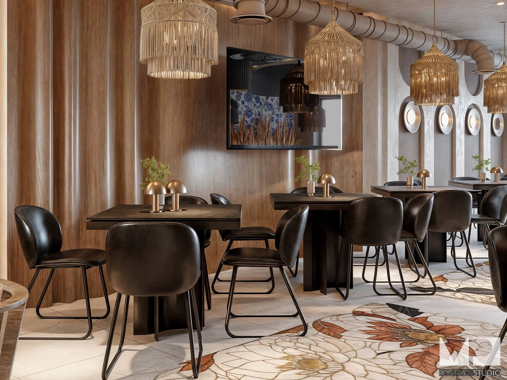
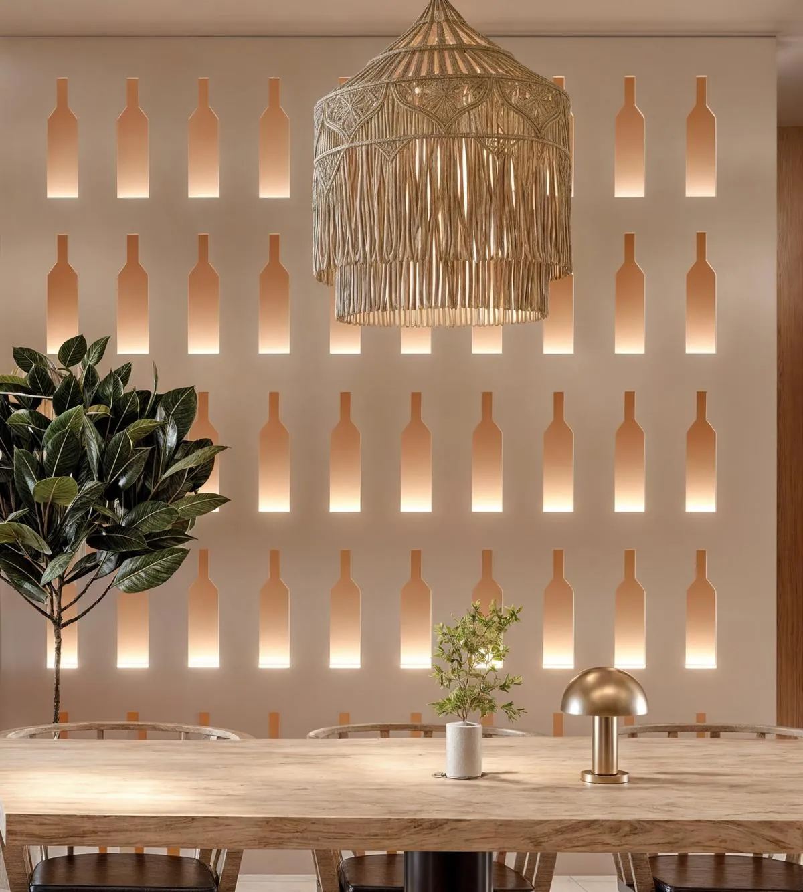
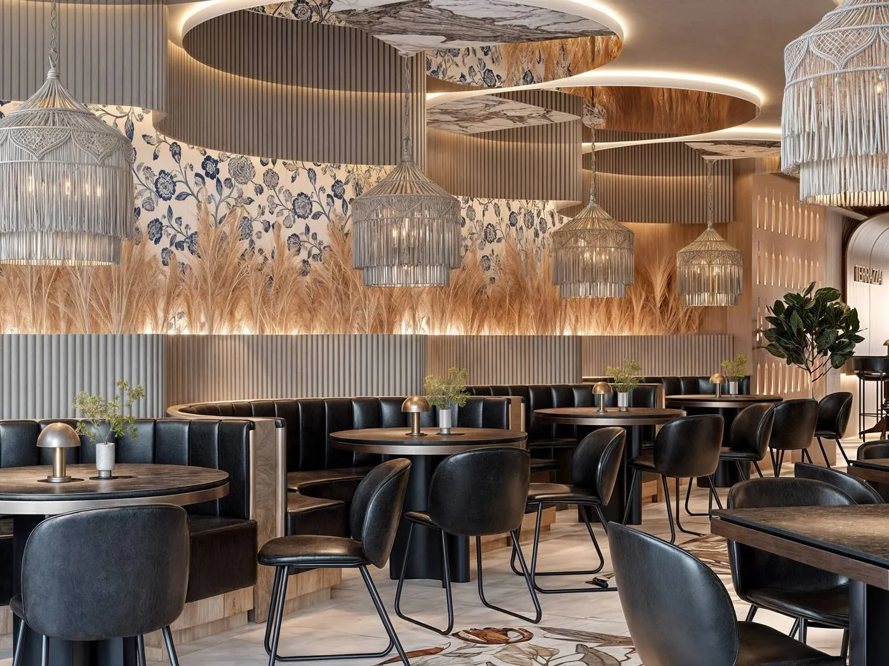
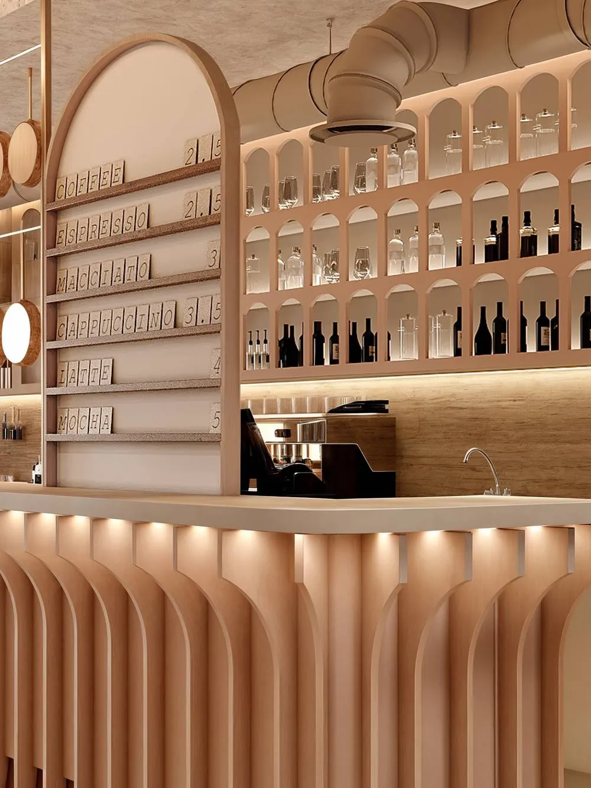
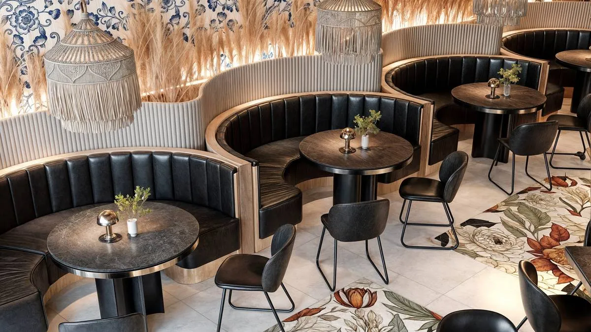
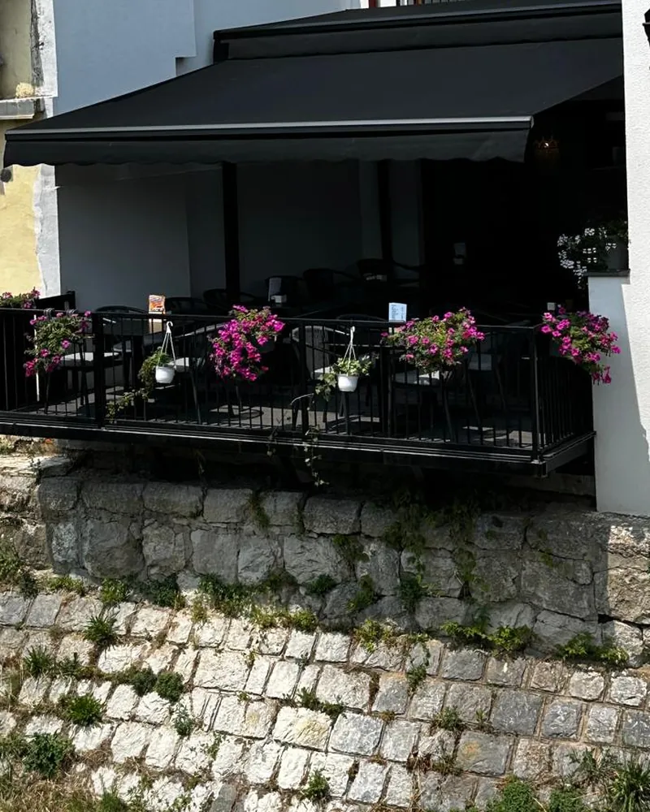

House speciality
Terrazza pizza
Stuffed crust, mushrooms, sesame, hot pepper and a touch of sour cream. You will not find it anywhere else.

Pizza & Pasta Bar — Valjevo
A terrace above the river, pasta rolled out that same morning and wine that takes its time. Kneza Miloša 3.
Book a tableWe opened Terrazza with one idea: that here, you eat slowly. No rush, no fuss — the way you eat at home, only with Italian recipes.

About us and our vision
Terrazza opened in the centre of Valjevo, at Kneza Miloša 3, with a terrace above the Kolubara riverbank. It is the place we wanted to have in our own town.
Our pizza dough rests for two days before it goes into the oven. Pasta is made in the morning, for that day. We choose our wines ourselves, one by one, and keep only the ones we would order. None of it is complicated — it simply takes time and care.
Italian recipes, with the kind of hospitality that is a given here. Guests stay long at our tables, and that is the greatest compliment we know.
Vision
That Terrazza stays a place you return to — not because it is new, but because it is yours.
From our kitchen
The rest awaits you on the menu — from breakfast to dessert and the drinks list.
House speciality
Stuffed crust, mushrooms, sesame, hot pepper and a touch of sour cream. You will not find it anywhere else.

Grilled beef steak in a sauce of fresh mushrooms and cream, served with rocket. It calls for a glass of red.

Homemade mlinci — traditional baked pasta sheets — with chicken and gorgonzola, baked under a cheese crust. Served piping hot.
Trattoria
This is where our tre piatti da ricordare are made. From a terrace bathed in sunlight and the sound of the river, to a dining room of timeless charm under authentic vaults. All that is left is to choose where you would like to make new memories.


Summer — the terrace above the water.
Winter — the dining room inside.
Your usual table, if you let us know in time.

Terrace
In summer we sit outside, above the water. Under the awning, among the flowers, with a view of the old riverbank.

Reviews
★★★★★“A lovely pizzeria on Kneza Miloša street, with an interesting interior and a beautiful terrace above the Kolubara riverbank.”
★★★★★“A really pleasant place. The food is excellent, the pasta is just like in Italy, and the staff are very friendly.”
★★★★★“We came for the pizza and stayed for the atmosphere. Fresh, tasty and no fuss — just right.”
Reviews translated from Serbian
Reservations
On Friday and Saturday evenings it is worth booking ahead.
The terrace fills up first.
or call +381 69 4274455